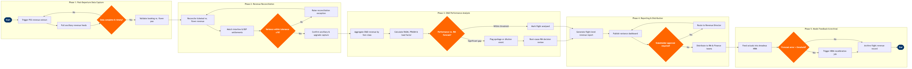

| Step | L4 Step Name | KPI / Target | Pain Point / Risk | Gate |
|---|---|---|---|---|
| 1.1 | Trigger post-departure PSS revenue extract | Extract available within 30 min of block-in; ≥99.5% flight coverage | Altéa extract latency spikes during high-frequency bank departures, delaying same-day reporting windows | |
| 1.2 | Pull ancillary revenue feeds from ancillary platform | Ancillary revenue captured per passenger ≥ airline target (e.g. USD 28/pax industry benchmark) | Ancillary items sold via NDC API Gateway may not post to Altéa in real time, creating gaps in same-day reporting | |
| 1.3 | Validate booking-to-flown passenger completeness | Booking-to-manifest match rate ≥99.8% before proceeding | Last-minute irregular operations (IROPs) create orphan booking records that misstate flown revenue | ⚠ |
| 2.1 | Reconcile ticketed revenue vs. flown revenue | Revenue variance tolerance ≤1% of flight revenue before exception flag | Multi-coupon interline tickets generate partial-revenue allocations that SAP FI cannot auto-match without manual MITA settlement codes | ⚠ |
| 2.2 | Match BSP & interline settlement amounts | BSP settlement matched within 48 hours of departure; dispute rate <0.5% | Prorate disputes with interline partners under MITA/BIMA can take 30–90 days to resolve, overstating interim revenue | |
| 2.3 | Validate upgrade & no-show revenue capture | No-show revenue leakage <0.2% of total flight revenue | Oversold flights with denied boarding (IDB/VDB) generate compensation cost offsets that are frequently mis-posted against revenue rather than cost accounts | ⚠ |
| 3.1 | Aggregate O&D revenue by fare class & cabin | O&D attribution completeness ≥98% of total flight revenue | Point-to-point carriers with connecting itineraries lack native O&D proration logic in Altéa; NRM must apply estimated prorate splits | |
| 3.2 | Calculate RASM, PRASM, and load factor vs. forecast | RASM actuals within ±3% of pre-departure NRM forecast; load factor ≥83% | NRM forecast baseline uses O&D demand curves that require 12+ months of history — new routes show high forecast error in first two seasons | |
| 3.3 | Identify revenue spoilage and dilution events | Spoilage rate ≤4% of available seats on constrained routes; dilution rate ≤2% | Automated RM bid-price controls in NRM cannot retroactively explain spoilage caused by schedule irregularities or competitor fare wars without manual analyst annotation | ⚠ |
| 4.1 | Generate flight-level post-departure P&L report | Report generation within 4 hours of block-in for priority routes | SAP FI cost allocations for fuel and crew are posted at cost-centre level, not flight level — flight P&L requires manual allocation keys that reduce accuracy | |
| 4.2 | Publish variance dashboard for RM and Finance | Dashboard refresh latency ≤1 hour from report generation; stakeholder access rate ≥90% | Tableau data extracts from SAP and NRM use separate ETL schedules, causing dashboard columns to reflect mixed reporting periods during refresh windows | |
| 4.3 | Route significant variances to Revenue Director | Escalation triggered within 2 hours for variances ≥5% of planned flight revenue | No automated escalation workflow in SAP FI — analysts rely on manual email alerts, creating inconsistent escalation timing across regions | ⚠ |
| 4.4 | Distribute approved reports to RM and Finance teams | Distribution to all stakeholders within 6 hours of block-in for same-day flights | S3 IAM access policies differ between Revenue Management and Finance teams, requiring duplicate report versions with different data masking levels | |
| 5.1 | Feed actuals into NRM for forecast comparison | Actuals feed completed within 24 hours of departure; data completeness ≥99% | NRM actuals ingestion pipeline requires structured SSIM-aligned flight keys — IROPs-affected flights with revised flight numbers create orphan actuals that must be manually re-keyed | |
| 5.2 | Assess forecast model error vs. recalibration threshold | MAPE ≤8% on 30-day rolling basis; trigger recalibration if MAPE >10% for 5 consecutive days | NRM model recalibration jobs require 4–6 hour processing windows that temporarily freeze bid-price updates, creating yield management blind spots during peak booking periods | ⚠ |
| 5.3 | Trigger NRM demand model recalibration job | Recalibration job completes within 6-hour maintenance window; model improvement verified by ≥1% MAPE reduction | Amadeus NRM recalibration requires coordination with Amadeus managed services SLA (8-hour response window), delaying urgent corrections during high-yield periods such as holiday blocks | |
| 5.4 | Archive finalised flight revenue record to data lake | 100% of departed flights archived within 24 hours; retention compliance per IATA Resolution 787 (7-year minimum) | S3 lifecycle policies must balance cost (Glacier transition) against ad-hoc audit retrieval SLAs — retrieval from Glacier takes 3–5 hours, conflicting with same-day audit requests |